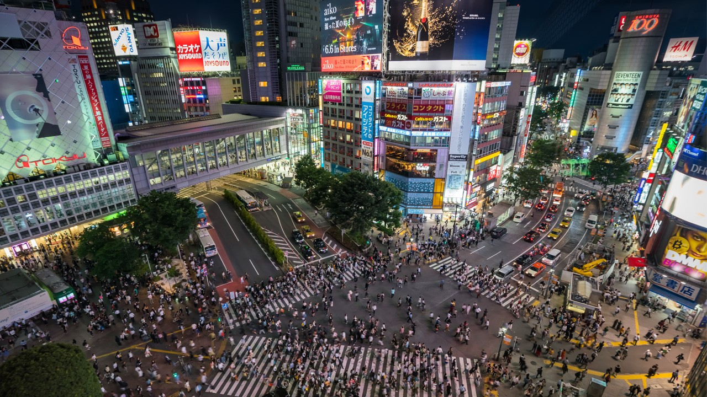

Япония — это островное государство, расположенное на архипелаге в Тихом океане. Общую территорию страны (377,915 км²) образуют водное пространство - 3091км² и суша 374744 км².
Япония — это островное государство, расположенное на архипелаге в Тихом океане. Общую территорию страны (377,915 км²) образуют водное пространство - 3091км² и суша 374744 км².
Столица Японии — Токио, её административный, финансовый, промышленный и культурный центр. Население - 37 435 191 человек. Это самый большой город по населению в мире.
Денежная единица Японии - йена (яп. "эн") - одна из основных резервных валют мира после доллара США и евро. Международный код: JPY. Латинский символ - ¥.
Население Японии составляет 127,433,404 человек (2007 г.). Япония является мононациональной страной - около 98% ее населения составляют японцы, а также мировым лидером по продолжительности жизни граждан: женщины в среднем живут 84 года, а мужчины - 77 лет.